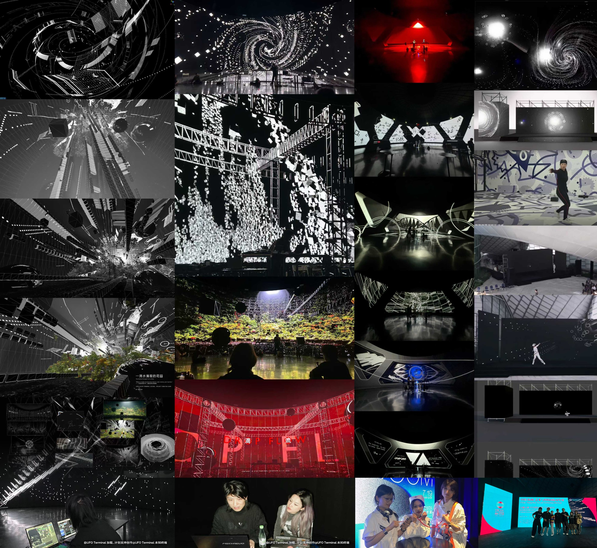

Spatial Image
Team Work
Performance, projection, and real-time visual structure.
Drop Flow connects sound, body, architectural surface, and digital-natural narration into a public spatial image series.